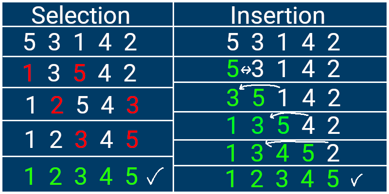

Bubble sort is by far one of the most simple sorting algorithms to be exposed to. The plan is simple, compare every element to its element to the right. If the element on the right is greater, do nothing. Otherwise they swap. Once all of the elements are compared, this process is repeated again. The name of this sort is bubble sort since this has the effect of bringing the greatest element to the top. This means the last element no longer needs to be checked. The final optimization that could be made is to end the sort if it finishes a complete pass without making any swaps.
As will be shown in the next segment, this is a truly inefficient algorithm, especially for bigger datasets. The benefit of this sort is that it is especially to write and understand. Below will be an example of a psuedo-code implementation of this sort.
procedure sort(unsorted_array) {
// this outer loop runs until the array is sorted
for (i = 1, i < unsorted_array.size - 1 ) {
// the number of swaps is recorded in case the list is already sorted
number_swaps = 0
// each passing of this loop brings the greatest element to the end of the list
for (j = 0, j < unsorted_array.size - i) {
// is this pair of elements sorted? if not swap them.
if unsorted_array[j+1] < unsorted_array[j] {
temp_val = unsorted_array[j]
unsorted_array[j] = unsorted_array[j+1]
unsorted_array[j+1] = temp_val
number_swaps++
}
}
// stop looping if the sort is completed
if (number_swaps == 0) {
break
}
}
}
Selection Sort and Insertion Sort are the next two easiest sorting algorithms to understand. First, let's talk about Selection Sort. Selection sort creates a new array to be filled. A variable holds the value of the first unsorted element in an array. This value is compared to every other element in the unsorted array until the minimum value is found. This value is removed from the unsorted array and added to the end of the new array. This process repeats until there are no more elements in the unsorted array.
Next let's talk about Insertion Sort. Like Selection Sort, we start with our unsorted array and create a new "sorted" array. The first element in the unsorted array is taken out and put in the sorted array. The next unsorted element is compared to all the elements in the sorted array until it is inserted into the correct position. This is repeated until all elements are removed from the unsorted array. If you are confused how this is different from Selection Sort, this sorting algorithm puts unsorted elements into the correct position of a sorted array while Selection Sort adds the smallest value to the end of a sorted array. A diagram will be provided below to demonstrate.
So far, all these algorithms are rather slow and ineffective. These two algorithms may be slightly faster than bubblesort, but they really aren't much better.
TO BE WRITTEN
TO BE WRITTEN